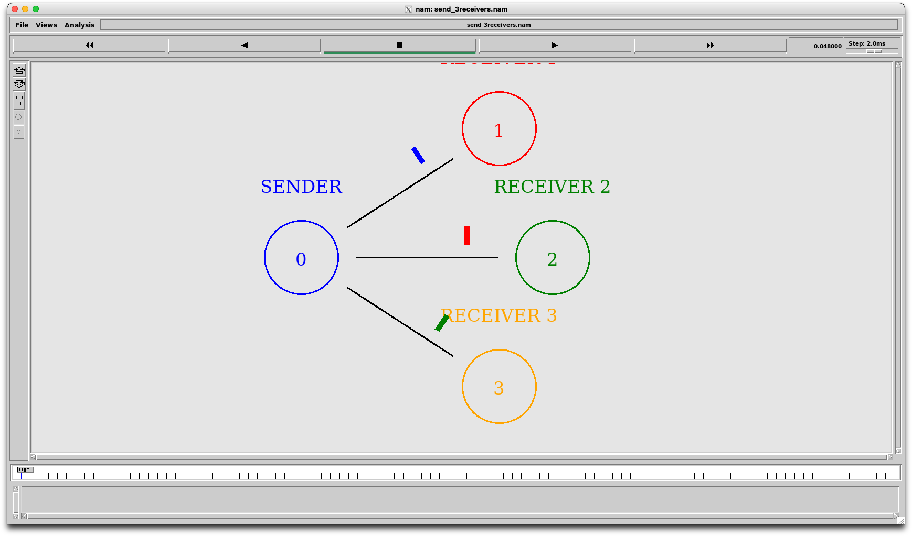

Community testing
is open.
Help check Network Simulator 2 (NS-2) and NAM across Apple Silicon Macs and macOS versions. We welcome results from M1, M2, M3, M4 and newer processors. Successful runs are just as useful as bug reports.
ISSUE #3SUBMIT YOUR TESTING REPORTNS-2 + NAM
APPLE SILICON TEST RUNHOW TO TAKE PART
What to do
- 01Read the installation guide
- 02Install using the normal end-user process
- 03Launch NS-2 and NAM
- 04Run the included sample simulation
- 05Submit your report
Please use the regular installation process. You do not need to clone the repository, download its ZIP, build Docker manually, or edit source files.
WHAT TO SHARE
Show NAM in action
Please include a screenshot of the NAM window displaying a running network simulation. Screenshots of installation errors or other problems are welcome too.
Privacy reminder Hide passwords, private IP addresses, usernames and other sensitive information before uploading screenshots.

INCLUDE IN YOUR COMMENT
System and test results
Share what you know; mark anything unavailable as “Not sure.”
System information
- Mac model
- e.g. MacBook Air M2
- Processor
- M1 / M2 / M3 / M4 / newer
- macOS version
- Installed version
- Docker Desktop
- Installed version
- XQuartz
- Installed version
- Xcode Command Line Tools
- Installed / Not Installed / Not Sure
Testing results
- Installation
- Successful / Failed
- NS-2
- Working / Not Working
- NAM
- Working / Not Working
- Sample simulation
- Successful / Failed / Not Tested
Problems and suggestions
Describe errors or difficulties, confusing installation steps, and improvements you would suggest.
Developer contributions: Fix compatibility issues, improve installation scripts, suggest enhancements, or submit a Pull Request.
Copyable report template
Copy the template, fill in the details, and post it as a comment on GitHub Issue #3.
### Mac Configuration
- **Mac Model:**
- **Processor:** M1 / M2 / M3 / M4 / Other
- **macOS Version:**
- **Docker Desktop Version:**
- **XQuartz Version:**
- **Xcode Command Line Tools:** Installed / Not Installed / Not Sure
### Testing Results
- **Installation:** Successful / Failed
- **NS-2:** Working / Not Working
- **NAM:** Working / Not Working
- **Sample Simulation:** Successful / Failed / Not Tested
### Problems Encountered
Describe any errors or difficulties you faced.
### Suggestions & Improvements
What could be improved? Did you encounter any confusing steps?
### Additional Comments
Any other feedback is welcome!ONE PLACE FOR EVERY REPORT
Share your results on GitHub
Post testing reports, screenshots, errors and suggestions as a comment on Community Testing issue #3.